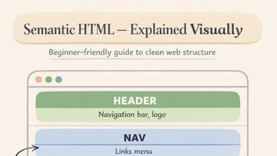
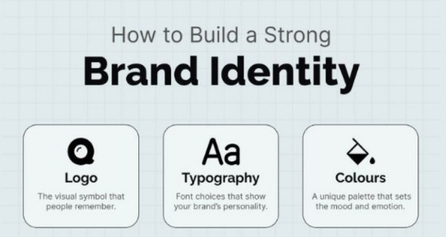
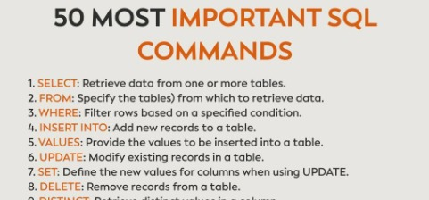

Mastering Excel & Power BI Fundamentals
A beginner-friendly guide explaining data cleaning, modern DAX formulas, and how to build interactive dashboards using Power BI and Excel.
Read More

A beginner-friendly guide explaining data cleaning, modern DAX formulas, and how to build interactive dashboards using Power BI and Excel.
Read More
A step-by-step breakdown of my analytical process when creating a complete data visual report, from raw data to final dashboards.
Read More
SQL (Structured Query Language) is a standard language used to manage relational databases. It allows users to store, retrieve, update, and delete data efficiently. SQL works with tables made up of rows and columns. Each table represents a specific type of data, such as users or products. The `SELECT` command is used to retrieve data. `INSERT`, `UPDATE`, and `DELETE` are used to modify data. `CREATE` and `DROP` manage database structures. SQL is easy to read and uses simple English-like commands. It is used in systems like MySQL and PostgreSQL. SQL is essential for web development, data analysis, and database management.
Read MoreA beginner-focused theme that explores how data cleaning and modern visualization tools create the foundation for effective business decisions, and how those skills translate into building scalable, professional business intelligence solutions using Tableau and Power BI.
Read More